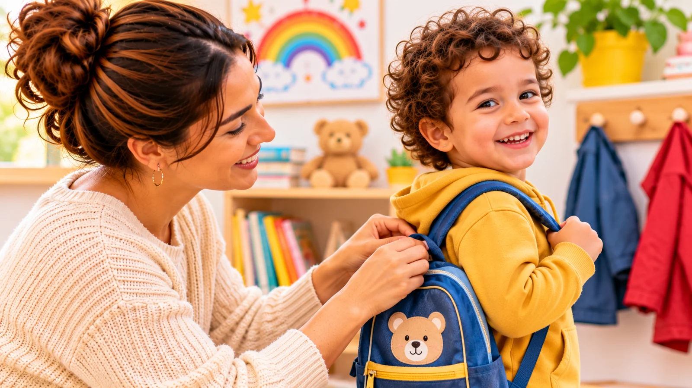

La première rentrée en crèche ou en maternelle représente une étape importante pour l’enfant comme pour ses parents. Nouvel environnement, nouvelles personnes, habitudes différentes : cette transition peut susciter de la curiosité, mais aussi de l’inquiétude.
Elle ne se vit pas au même âge pour tous les enfants. À l’École Maternelle Lila, par exemple, les enfants peuvent être accueillis dès 15 mois, en Section d’Éveil, et accompagnés jusqu’à la Grande Section, vers 6 ans. Une préparation adaptée à l’âge de l’enfant et des échanges avec l’équipe d’accueil peuvent aider toute la famille à aborder ce changement plus sereinement.
Une préparation adaptée à chaque âge
Quelques jours ou semaines avant la rentrée, expliquez simplement à votre enfant ce qui va changer : il découvrira un lieu, rencontrera des adultes et découvrira la vie en collectivité avec d’autres enfants. Adaptez les explications à son âge et évitez de multiplier les détails qui pourraient l’inquiéter.
- Avant 2 ans : le tout-petit comprend surtout ce qu’il voit et ce qu’il vit. Les repères concrets l’aident davantage que les longues explications : passer devant le bâtiment, refaire le trajet ensemble, emporter un objet familier si le lieu d’accueil le permet. C’est aussi une période où les séparations sont souvent particulièrement difficiles : un temps d’adaptation est fréquent.
- Entre 2 et 3 ans : l’enfant comprend de plus en plus de mots et commence à faire semblant. Lire une histoire sur la rentrée, regarder des photos de l’établissement si elles sont disponibles ou jouer à « déposer la poupée à la crèche » l’aide à se représenter la journée.
- À partir de 3 ans : l’enfant peut poser des questions et parler de ce qu’il imagine. Demandez-lui ce qu’il ressent et rassurez-le : il est normal d’être à la fois content, curieux et inquiet.
- Lorsque la rentrée a lieu plus tard dans le parcours, par exemple lors d’un changement d’établissement, l’enfant a parfois déjà connu la vie en groupe, mais il découvre de nouveaux adultes, de nouveaux camarades et de nouvelles habitudes. Il a, lui aussi, besoin de temps pour trouver ses repères.
Préparer l’enfant en douceur
Quelques gestes simples peuvent faciliter les premiers jours :
- Découvrir les lieux : lorsque c’est possible, une visite avant le premier jour permet à l’enfant de se familiariser avec les espaces. À l’École Maternelle Lila, la visite de l’établissement fait partie des étapes de l’inscription.
- Ajuster le rythme : mettre en place, quelques semaines à l’avance, les nouveaux horaires de coucher et de lever laisse à toute la famille le temps de s’adapter, sans se presser le matin.
- S’entraîner aux séparations : confier l’enfant quelques instants à un proche de confiance, puis allonger progressivement ces moments, l’aide à découvrir que vous revenez toujours.
- Répéter le rituel d’au revoir : un même geste, une même phrase ou une petite chanson, que vous pourrez reprendre le jour de la rentrée.
Préparer les repères pratiques
Anticiper quelques éléments permet de réduire le stress des premiers matins :
- Préparer les vêtements et les affaires demandées.
- Repérer le trajet et les horaires.
- Identifier les habitudes de sommeil et de repas à communiquer à l’équipe.
- Prévoir, si l’établissement l’autorise, un objet familier rassurant.
- Échanger sur les besoins particuliers de l’enfant.
- Indiquer la ou les langues parlées à la maison, ainsi que quelques mots familiers de l’enfant, par exemple pour boire, dormir ou réclamer son doudou.
Il est utile de vérifier directement auprès de l’établissement la liste des affaires nécessaires et les modalités d’accueil.
Les premiers au revoir et le dialogue avec l’équipe
Le jour de la rentrée, un au revoir court et toujours organisé de la même façon aide l’enfant à se repérer : dites-lui au revoir, rappelez-lui quand vous reviendrez, puis partez sans prolonger ce moment. Pour mieux comprendre les pleurs du matin et les apaiser au fil de l’année, vous pouvez lire notre article sur les difficultés de séparation le matin.
Partagez les informations utiles sur votre enfant : ce qui le rassure, ses habitudes, ses goûts, ses difficultés éventuelles et les changements récents. N’hésitez pas à poser des questions sur le déroulement de l’accueil, les temps de transition et les moyens de communiquer avec l’équipe. Une relation de confiance se construit grâce à des échanges réguliers et respectueux.
Et si l’adaptation prend du temps ?
Il est normal que les premiers jours ne se ressemblent pas. La fatigue, les nouvelles stimulations et les changements de rythme peuvent influencer le comportement de l’enfant. Certains enfants s’adaptent rapidement, d’autres ont besoin de davantage de temps. Pour accompagner les émotions de son enfant pendant cette période, mettre des mots sur ce qu’il ressent peut l’aider.
Si les difficultés persistent ou vous inquiètent, faites le point avec l’équipe et, si nécessaire, avec un professionnel de santé. L’objectif est de comprendre les besoins de l’enfant et d’ajuster l’accompagnement.
En conclusion
Une première rentrée se prépare avec des repères simples, une communication ouverte et une transition adaptée à l’enfant. Les parents n’ont pas besoin de tout anticiper : ils peuvent avancer progressivement, en lien avec l’équipe qui accueille leur enfant.
Une rentrée réussie ne signifie pas une séparation sans larmes, mais un enfant accompagné avec attention dans cette nouvelle étape.
L’équipe de l’École Maternelle Lila, Avec vous, pas à pas.
Sources et ressources
- UNICEF Parenting – How to prepare your child for preschool
- UNICEF Parenting – Comment gérer l’angoisse de la séparation chez votre enfant
- AAP / HealthyChildren.org – How to Ease Your Child’s Separation Anxiety
- AAP / HealthyChildren.org – Making Baby Drop Off at Child Care Easier
- CDC – Important Milestones: Your Child By Thirty Months
- GOV.UK – Development Matters (référentiel britannique de la petite enfance)